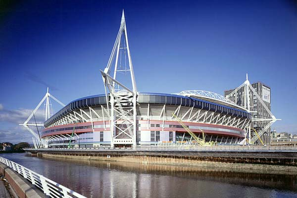

La Baie de Cardiff
Cardiff Bay (gallois: Bae Caerdydd) est le domaine créé par le barrage de Cardiff. La régénération de la baie de Cardiff est aujourd'hui largement considérée comme l'un des projets les plus réussis dans le Royaume-Uni. La baie est alimentée par deux fleuves (Taff et Ely) pour former un lac d'eau douce de 2 km2 autour l'ancienne zone de docks située au sud de la ville.
Mermaid Quay est le quartier culinaire de la baie où se trouvent plusieurs bars et restaurants de fruits de mer, de specialités japonnaises...
Cardiff Bay est aussi un espace culturel et politique avec le flambant-neuf Wales Millenium Centre (théâtre, opéras, ballets...) ainsi que The Welsh Assembly Government (l'Assemblée Nationale Galloise).

Le Millenium stadium
Le Millennium Stadium (Stadiwm y Mileniwm en gallois) est un stade de 74 499 places situé à Cardiff au Pays de Galles. C'est le stade national du Pays de Galles ; à ce titre il héberge notamment les rencontres des équipes galloises de rugby à XV et de football. Propriété de la Welsh Rugby Union (entité organisatrice des compétitions de rugby à XV au pays de Galles), il a été construit à l'occasion de la Coupe du monde de rugby 1999 à l'emplacement du Cardiff Arms Park.
Le Millennium Stadium est le deuxième plus haut batîment de Cardiff, après la BT Tower.